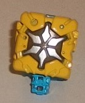

Size : Prime Master
Difficulty of Transformation : Very Easy
Color Scheme : Semi-metallic dull snot green, dark milky gray, and some silver and orangish "cheesy" yellow
Individual Rating : 3.5
Set Price : $70 (U.S.)
 Amalgamous
Prime
Amalgamous
Prime
Size
: Prime Master
Difficulty of Transformation
: Very
Easy
Color Scheme
: Semi-metallic dull
snot green, dark milky gray, and some silver and orangish "cheesy" yellow
Individual Rating
: 3.5
A couple of the 12 different
main Prime Masters didn't get their own individual Prime Master Set releases,
so some of the missing ones have gotten "solo releases" for this set. One
of these "left out" Primes is Amalgamous Prime, which is understandable,
as just try to get the target mainstream audience at the store to say or
read the word "amalgamous" properly. Anyways, the robot portion of this
toy has the same details/molding as
Micronus
Prime
; the difference is, the head, arms, and upper legs are painted
a rather unappetizing snot/puke green, though at least it has some glitter
in it to make it look semi-metallic. The body and lower legs are a dark
milky gray, which provides some contrast against the lighter color-- even
if it's not exactly an eye-catching scheme, it's original. There's a bit
of silver on the face, but that's it as far as paint for the robot mode.
The front of the core mode has been re-done, with Amalgamous' yellow-orange
symbol painted in the middle. It looks like some kind of one-eyed insectoid
alien creature, with a small star above its head. It only vaguely resembles
anything, which-- given that Amalgamous Prime can change his form at pretty
much the molecular level fictionally-- makes sense. There's some sharp,
angular details around the main symbol, though cast in the milky snot green
plastic as they are, the details don't pop out as much as they could.
 Nexus
Prime
Nexus
Prime
Size
: Prime Master
Difficulty of Transformation
: Very
Easy
Color Scheme
: Dull pumpkin orange,
dark milky gray, dull metallic bronze, and some dull mustard yellow
Individual Rating
: 3.7
Nexus Prime's the second
Prime Master in the set that was "forgotten" at retail, though unfortunately
like the other Prime Masters that had previous existing toys, he looks
nothing like the
Collectors' Club combiner
.
Instead, the robot mode uses
Alchemist Prime's
robot mode detailing as a base, but with the lower legs, waist, body, and
head in a dull pumpkin orange plastic. It's a pretty nice shade of the
color that's not used often on TFs, and looks almost bronzish, which I
believe was the intent, given that the arms and upper legs are dark milky
gray. This gives the toy a (non-metallic) version of a bronze-and-silver
color scheme. The head is actually cast in dark gray plastic, but is almost
entirely covered up with dull metallic bronze paint, except for the face,
which is left gray. Like Amalgamous, it's a fairly original color scheme,
though Nexus pulls off his basic-but-original color scheme a bit better,
in my opinion. The front of the core mode has of course been remolded for
Nexus, with the sides being painted that same metallic dull bronze paint
as the robot head, while the symbol itself is a dull mustard yellow surrounded
by an outline of dark gray-- a pretty decent color combo, overall. Since
Nexus Prime is the Combiner Prime, his symbol shows four lines converging
on a single diamond point-- i.e., the basic point of a 5-robot combiner.
The bronze details surrounding the symbol have some angular detailing that
looks almost technorganic, with some small circles near the bottom sides--
some pretty nice detailing, I would say.
 Prima
Prime
Prima
Prime
Size
: Prime Master
Difficulty of Transformation
: Very
Easy
Color Scheme
: Pastel milky blue,
light milky gray, silver, and some light metallic silvery blue
Individual Rating
: 3.5
Prima Prime's another
one from the "Halo" that wasn't given his own Prime Master set, so his
solo toy here gets the robot mode recolored from
Solus
Prime's
. His color scheme is pretty pale, with some of that blah light
milky gray on his head, arms, and upper legs, while some very pale pastel
milky blue is used for his chest and lower legs. Meanwhile, the visor and
faceplate on his head is painted a light metallic silvery blue-- the same
shade they'll often paint windows. I kinda wish the blue was a bit bolder,
but I guess as-is his color scheme is kinda "pale light"-ish, which fits
in with his theme about being the "light/good Prime". The core piece has
been remolded, of course, with Prima's insignia on it. The actual symbol
itself looks like two pecs and a few abs-- representing protection/strength?--
in the sale pale milky blue paint, while the rest of the front is coated
in a nice silver paint. There's plenty of technorganic-looking angles and
edges on these outer parts, which hearkens back to
Movie
Protoform Optimus Prime
, it seems. Interesting homage, I'd say.
 Thirteenth
Prime
Thirteenth
Prime

Size
: Prime Master
Difficulty of Transformation
: Very
Easy
Color Scheme
: Dull yellow, milky
light blue, and some silver, dull dark goldish bronze, and light blue
Individual Rating
: 3.8
But wait, there's more!
Yes, there's twelve Primes in the Halo, but there's a Thirteenth Prime,
simply called... the Thirteenth Prime! He's veeerrry mysterious... even
though they hint he's Optimus in some aspect. Even though he looks nothing
like him. Yeah, go figure. Anyways, in robot mode the Thirteenth takes
the legs and body of
PotP Vector Prime
, but
with the arms remolded to be bulkier and fit in with the sides of the remolded
core piece on his back, while the head has been remolded to look like the
Marvel Comics version of... er... Prima. (Okay, the Thirteenth Prime is
REALLY confusing.) The new head has a fairly square appearance just like
Marvel Prima (though of course, part of that's to incorporate the gimmick),
with some little divots in the side of the head, a square forehead, and
a silver-painted, "normal" face. His fists are painted silver, as are his
upper legs, while his arms are dull yellow and his head, body, and legs
are a light blue plastic. Overall, definitely one of the more colorful,
paint-heavy robot modes for a Prime Master (even though that's not saying
much). In core mode, the Thirteenth's symbol looks very much like the core
of the Matrix-- basically a segmented sunburst symbol, with some irregularly
shaped Swiss cheese-like holes in some of the detailing around it. It...
very much looks like a Matrix core, and not really anything else. The sunburst
details are silver, while they're surrounded by a background outline of
some dull dark goldish bronze-- a really nice shade that contrasts against
the silver while also complementing the yellow. Thus, it's a pretty darned
nice-looking core mode, even if it's incredibly derivative.
 Optimal
Optimus/Optimus Primal
Optimal
Optimus/Optimus Primal

Allegiance
: Maximal
Size
: Leader
Difficulty of Transformation to Optimus
Primal's Robot Mode
: Easy
Difficulty of Transformation to Optimal
Optimus' Robot Mode
: Easy
Color Scheme
: Charcoal black, light
glossy gray, very light gray, and some white, silver, milky moderately
light gray, transparent light blue, dark glossy navy blue, and moderately
light red
Individual Rating
: 7.7
(NOTE: Because this is a repaint, this is not a full-blown review. This mainly covers any changes made to the mold and the color scheme, and merely compares it to the original PotP Optimus Primal/Optimal Optimus. For a review on the mold itself, read the review of the original PotP Optimus Primal/Optimal Optimus here .)
For this SDCC-exclusive
redeco, the "core" robot of Optimus Primal is mostly unchanged. The main
differences can be seen in his vehicle spacecraft mode-- the front section
is a lighter gray, while the middle-front section is now charcoal black
like most of the rest of the toy. The window is still light transparent
blue, but the Matrix inside now has a red-painted rim around it, with white
handles. There's some additional white paint apps on the top of this front
part of the ship. The Maximal sticker on Primal's shoulder is still the
same, but the other details on the core robot have been changed-- they're
still simple geometric designs, but the stickers on the sides of the very
front section now have a Maximal symbol on them, with fewer colored details
on it, while the stickers on the sides of the section behind that are a
dark blue with some simple arrows and a colored yellow-to-red meter. The
robot mode for Primal is very close to the same as on the mass-release;
the only obvious changes are that the silver on his chest has been replaced
with a light glossy gray, while the pelvis has a more detailed gray paint
design than just blasting the whole piece with silver like on the mass-release.
For the large robot/gorilla
portion of Optimal Optimus, the color scheme has been largely changed to
look like it's a larger, upsized version of Optimus Primal, with a color
scheme closely matching that of the "core" Primal toy; most of him is again
charcoal black plastic, with some white on the upper legs, some very light
gray on the hands and sides of the lower legs, and plenty of a light-but-not-THAT-light
glossy gray on the gorilla face, chest, pelvis, and feet. The removable
armor pieces on the lower arms are charcoal black, while the vehicular
parts-- the wings on the shoulders and lower legs, as well as part of the
robot upper arms and a few other minor pieces-- are the same milky moderately
light gray that they were on the mass release. The small gun extensions
are black plastic, but are largely painted over with silver paint, which
is also on the lower portion of the upper arms and small portions of the
lower legs as well. The gorilla eyes are dark blue, as is most of the robot
head-- with silver on much of the face and forehead vent, and with blue
on the mouth, just like Primal's "normal" robot head. There's also a teensy
bit more red paint on the knees. Compared to the mass release, some of
the stickers here are different-- there's new added stickers to the sides
of the gun extensions with some Maximal symbols and "bolt" details on them.
On the flipside, there's only one sticker on each lower arm-armor piece
now, though it's a bit more decorative with some red lines on it. The other
stickers are the same as on the mass release.
No mold changes have
been made to the main Optimus Primal/Optimal Optimus toy itself, but he
does come with some accessories. First, he's got a metallic pale gold crown
that fits right over his combined robot mode head, with a nice red Maximal
on the front and some other blue, red, and green "jewels" near the front.
It helps "crown" Primal as the winner of that year's Fan Vote. He also
comes with a fairly large staff/club accessory, which again is mostly pale
metallic gold, with some red on the end of the club-like "knobs" at the
top and a bit of silver in a few spots, as well. Of course, his biggest
accessory is his throne, which is quite impressive, even if it's (mostly)
made of cardboard. If you take it out of the box like I did, make sure
to be careful that you don't cut any tape that holds this sucker together!
There's some really nice, intricate printed detailing on the throne-- it
looks like there's some mechanical details underneath, but with some magma-like
lines and scars on it, like it's been through a fight, and some vines criss-crossing
it, like it's a very old throne. It all looks very much like it came out
of a Central American ruin, which may have been a very early cue to the
Rise
of the Beasts
live-action movie Primal would eventually appear in in
2023. On the sides of the throne are scrawled images of the losers of the
fan vote-- Ultra Magnus, Megatron, Star Saber, Hound, Arcee, Shockwave,
Thunderwing, and Deathsaurus. Sorry guys, but the beast wins this time!
There's also a gold Maximal symbol near the top of the throne. The coolest
thing about the throne, though, is the so-called "Halo of Primus" behind
it, which is on a dial which can turn a section at a time. The Halo has
room for all 12 main Prime Masters-- the 3 included with this toy and the
other 9 across various retail "Power of the Primes" releases-- and there's
a plastic bubble in front of the Halo for you to relatively easily insert
and push out each Prime Master, and there's a symbol in each segment of
the wheel so you know where to put each Prime, along with that Prime's
name in Cybertronian on the side of each segment. It's an EXTREMELY cool
way to "complete the set"-- though what about the Thirteenth Prime, and
the
three
translucent
Prime
Masters
that come with the Amazon exclusive "Prime Wars" releases?
Well, good news-- the staff can extend a bit, with room to fit in four
more Prime Masters! Thus King Optimal can hold ALL the Prime Masters, between
the wheel and his staff.
The "Throne of the Primes" set is one of the few sets I'd recommend for the accessories more than the actual toys themselves. Don't get me wrong, a Primal-colored repaint of Optimal Optimus is a nice idea and-- even though it's more monochrome than the main release, with a lot more grays-- it fits the overall "Evolution" gimmick the toy has (plus it means every PotP "Evolution" toy now has a black repaint, heh). The four Prime Masters are nice extras to help complete the set, but the throne for the Fan Vote Winner, the awesome Halo of Primus with spots for all 12 main Prime Masters, the staff with room for the additional 4, and the nice gold crown really help put a cap not just on "Power of the Primes", but on the whole "Prime Wars" trilogy for completists and Generations collectors. I wish the throne was plastic, but that also might've made the price higher than the surprisingly affordable (for an SDCC exclusive) $70 U.S. Highly recommended for fans of Power of the Primes and the Prime Wars trilogy.
Reviews by Beastbot